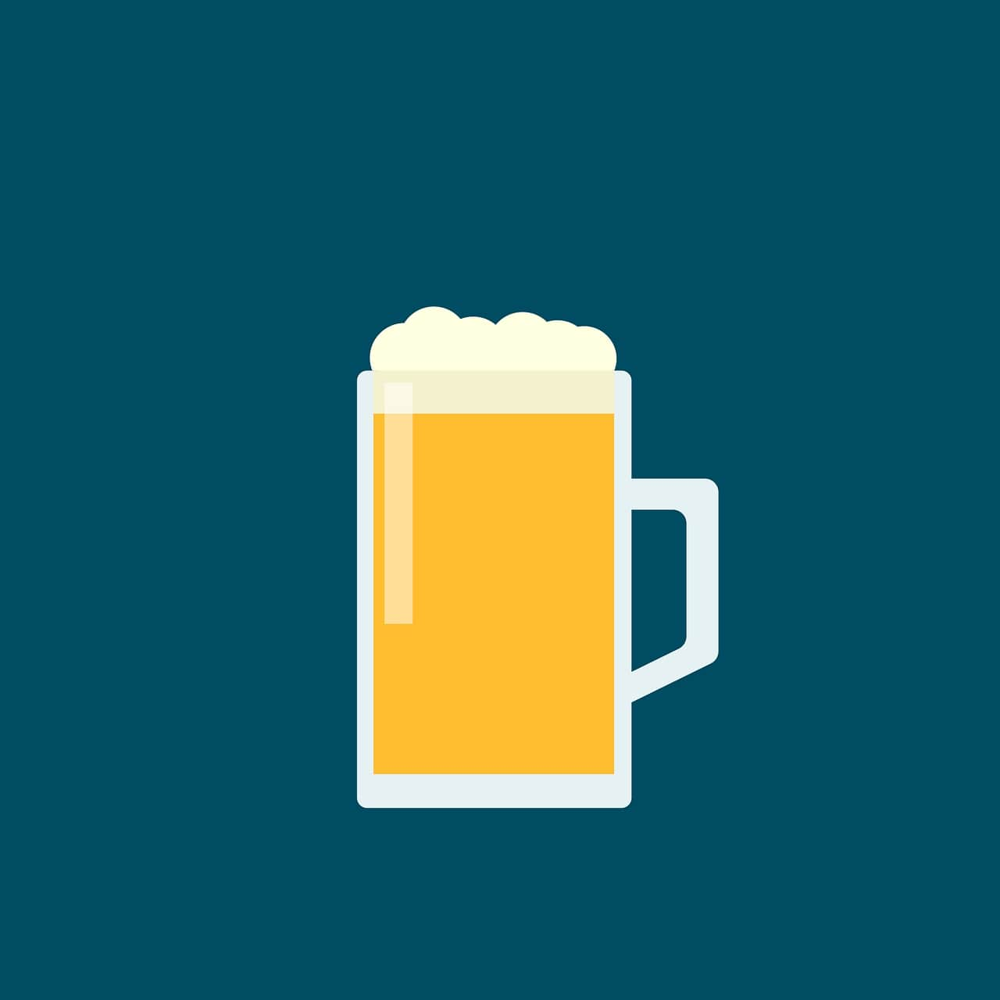

Summer Beer

Some refreshing summer beer <3
Ingredients
- 1 (12 fluid ounce) can frozen pink lemonade concentrate, thawed
- 12 fluid ounces water
- 12 fluid ounces vodka
- 1 (12 fluid ounce) can or bottle beer
Steps
- Place lemonade concentrate in a gallon pitcher. Measure water and vodka in the 12 ounce lemonade can and add to the pitcher. Pour in the beer, mix well and serve over ice.